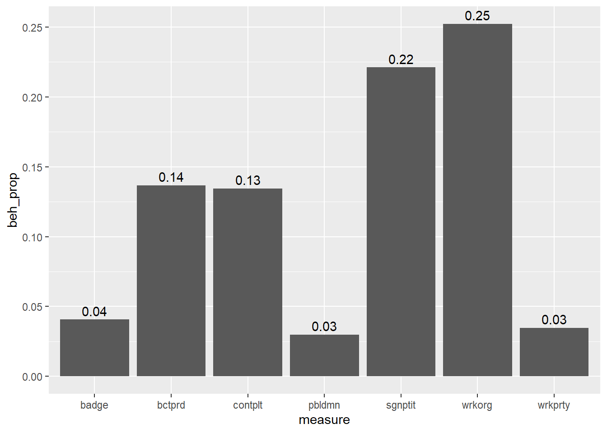
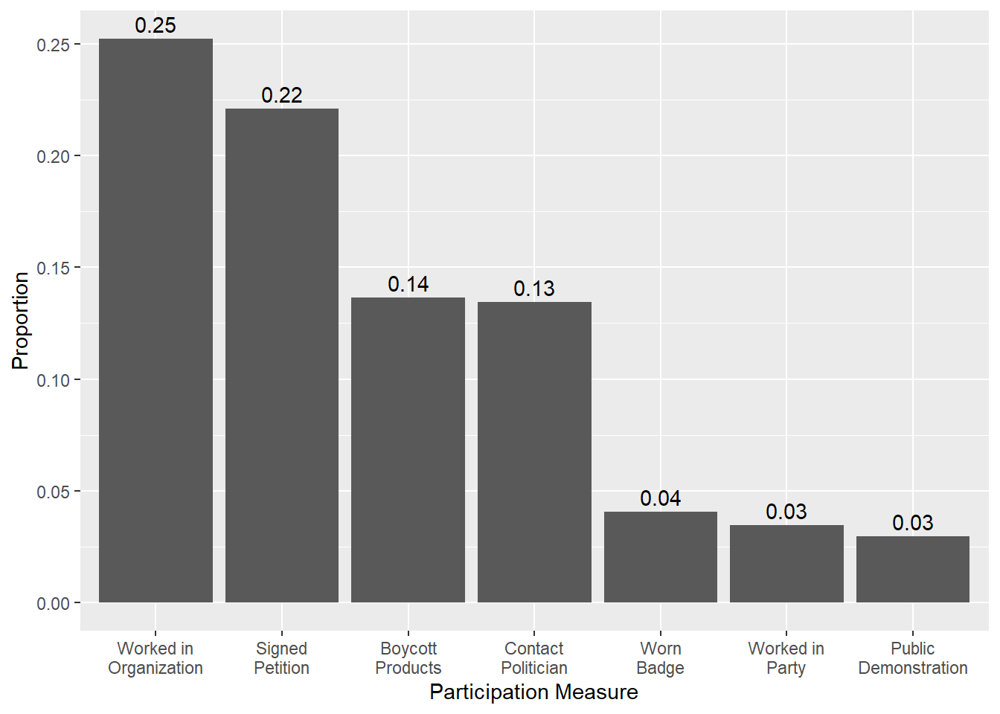
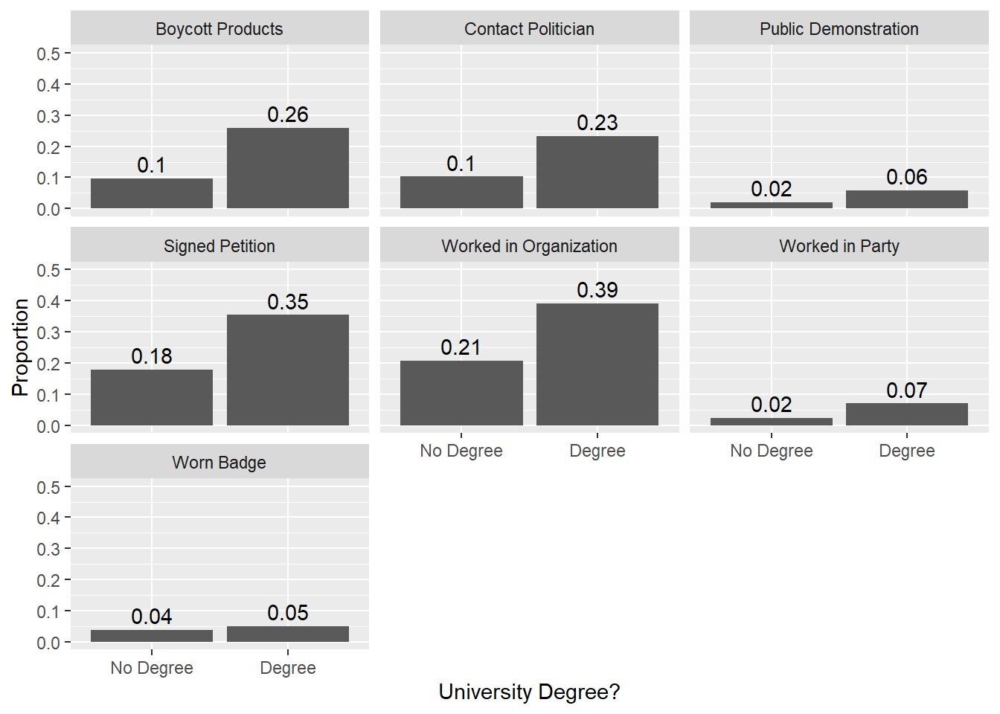
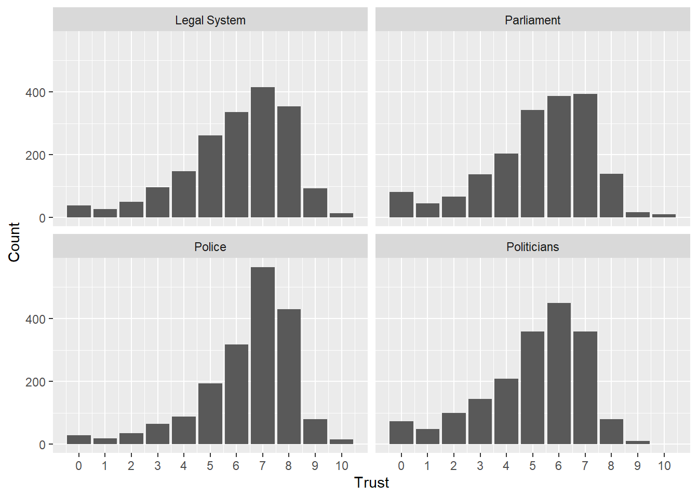
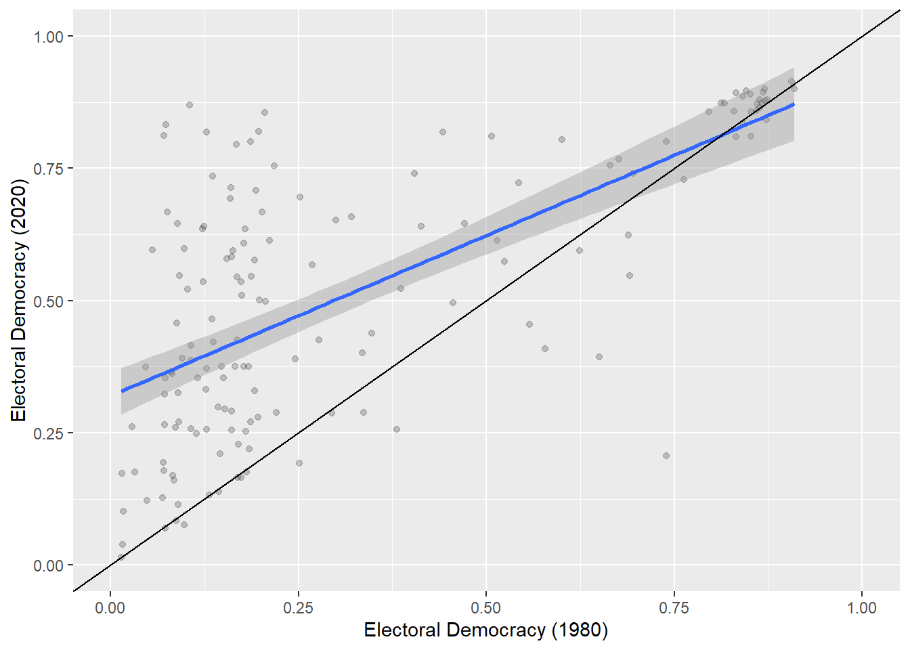

Show the code
#Packages
library(rio)
library(tidyverse)- 1
- For importing/exporting data
- 2
- Loads libraries for data manipulation and plotting
#Packages
library(rio)
library(tidyverse)You will be working with data in your project. The data that you obtain from the World Values Survey, the Dutch National Election Studies, the Varieties of Democracy, and so on, will likely be “tidy” data wherein columns represent variables and rows represent observations. These “tidy” datasets can nevertheless come in either of two “shapes” with potentially important implications for your analyses. This chapter unpacks this idea and discusses how you can move between “longer” and “wider” datasets.
Let’s first get a handle on what is meant by “wide” and “long” datasets.
The following dataset is a simplified version of the European Social Survey:
#Import our data
ess <- import("./data/ess_small.rda")
#A snapshot
head(ess) idno contplt wrkprty wrkorg badge sgnptit pbldmn bctprd eisced agea trstprl
1 600002 2 2 2 2 2 2 2 4 53 7
2 600003 1 2 1 2 1 2 1 5 41 4
3 600005 2 2 1 2 2 2 2 7 42 7
4 600011 2 2 2 2 2 2 2 1 87 3
5 600013 2 2 2 2 2 2 2 1 78 3
6 600014 2 2 2 2 1 2 2 2 48 5
trstlgl trstplc trstplt
1 8 6 6
2 5 5 2
3 8 8 7
4 4 8 3
5 9 8 6
6 3 0 3The columns are different variables. idno, for instance, is a unique and anonymized ID number for each respondent in the survey. The variable between contplt and bctprd provide data on whether the respondent indicated that they had completed some type of political behavior (e.g, wrkprt = 1 if the respondent reported working for a political party and 2 if not). The remaining columns provide data on education (eisced), age (agea), and trust in various institutions (trstprl through trstplt).
The foregoing is what we would call a “wide” dataset. The first column of a dataset is usually an identifier.1 A wide-formatted dataset is one wherein the values in this identifier column do not repeat. Each row in the dataset above focuses on a different survey respondent (as seen from the unique values in idno).
1 This is not always true. Big social surveys like the ESS or ANES will often start with lots of columns focused on survey-related variables (e.g., the country of the respondent, when the respondent answered the survey, what interviewing mode was used, weights, etc.) before getting to the actual survey responses.
Compare what is shown above to the following dataset, which focuses on data from the Varieties of Democracy (V-Dem) project:
#Import our data
vdem <- import("./data/vdem_small.rda")
#A snapshot
head(vdem, n = 10L) country_name year v2x_polyarchy v2x_egaldem v2x_corr
1 Mexico 1789 0.028 NA 0.68
2 Mexico 1790 0.028 NA 0.68
3 Mexico 1791 0.028 NA 0.68
4 Mexico 1792 0.028 NA 0.68
5 Mexico 1793 0.028 NA 0.68
6 Mexico 1794 0.028 NA 0.68
7 Mexico 1795 0.028 NA 0.68
8 Mexico 1796 0.028 NA 0.68
9 Mexico 1797 0.028 NA 0.68
10 Mexico 1798 0.028 NA 0.68This is a “long” formatted dataset. The first column is again an identifier. In this case, the variable is named country_name and provides the name of each country in the dataset. The values here repeat. The second column is year, which records the year the values of the other columns are measured for. The values in this column vary (e.g., 1789,1790, etc.). We can think of the observations in a “long” formatted dataset as a “dyad”.2 In this example, the dyad would be a “country-year” - our data includes observations on countries by year. A dyad could refer to something else though. For instance, suppose we ask respondents to evaluate multiple political parties; we could organize our dataset in a “long” format wherein each row provides a respondent’s evaluation of a distinct party (e.g., a respondent-party dyad).
2 We could perhaps have data with an even more complicated unit of analysis. Instead of countries, or country-years, perhaps we have party-country-years or something.
Most students in my BAP will use survey data. This type of data will generally be in a “wide” format unless, perhaps, the survey is a panel survey (e.g., the respondent is surveyed at multiple time points). In general, it will make the most sense to keep the data in that format. However, there are some situations wherein it may be useful to “reshape” the data (e.g., convert a wide dataset to a long dataset). This can facilitate some types of descriptive analyses and may be required for some types of statistical modeling. Likewise, you may have need to reshape a long dataset into a wider format. The remainder of this document will show you how to do this using two commands from the tidyverse: pivot_longer() and pivot_wider().
pivot_longer()Let’s consider a first use case where it may make sense to reshape our data as an example of how to do so. The ESS dataset above includes columns (variables) pertaining to whether the respondent reported performing various political actions. Here is an overview:
ess |>
select(contplt:bctprd) |>
sjPlot::view_df()view_df() command from the sjPlot package to take a look at the variable’s attributes. This set up allows me to use the command without loading the package first, which sometimes can be handy.
| ID | Name | Label | Values | Value Labels |
| 1 | contplt | Contacted politician or government official last 12 months |
1 2 NA(b) NA(c) NA(d) |
Yes No |
| 2 | wrkprty | Worked in political party or action group last 12 months |
1 2 NA(b) NA(c) NA(d) |
Yes No |
| 3 | wrkorg | Worked in another organisation or association last 12 months |
1 2 NA(b) NA(c) NA(d) |
Yes No |
| 4 | badge | Worn or displayed campaign badge/sticker last 12 months |
1 2 NA(b) NA(c) NA(d) |
Yes No |
| 5 | sgnptit | Signed petition last 12 months | 1 2 NA(b) NA(c) NA(d) |
Yes No |
| 6 | pbldmn | Taken part in lawful public demonstration last 12 months |
1 2 NA(b) NA(c) NA(d) |
Yes No |
| 7 | bctprd | Boycotted certain products last 12 months | 1 2 NA(b) NA(c) NA(d) |
Yes No |
Let’s say we were writing a paper where we are investigating the relationship between education and political participation. We might hypothesize that those with a university degree will be more likely to take action than those without one.
We should first begin by getting to know our variables. For instance, we might first ask whether rates of participation vary between these different behaviors. This may help us provide context for the results of the statistical model that we report later on in our paper.
One way we can do this is by creating a figure that plots the proportion of respondents who reported taking each action. However, our dataset is not very well organized for this goal given that each participation measure is a separate column in the dataset. Reshaping the data so that it is in a longer format can get around this problem. Specifically, we’ll do the following:
group_by() and summarize() to create a data object with the proportions (see Section 3.2 in the Statistic I R book for a refresher on these tools)Let’s begin by reshaping the data. Here is the syntax:
ess_long <- ess |>
pivot_longer(
cols = c("contplt", "wrkprty", "wrkorg", "badge",
"sgnptit", "pbldmn", "bctprd"),
names_to = "measure",
values_to = "outcome" )Here is the data produced by this command. Seeing it will help illuminate what I did in the syntax above:
head(ess_long, n = 10L)# A tibble: 10 × 9
idno eisced agea trstprl trstlgl trstplc trstplt measure outcome
<dbl> <dbl> <dbl> <dbl> <dbl> <dbl> <dbl> <chr> <dbl>
1 600002 4 53 7 8 6 6 contplt 2
2 600002 4 53 7 8 6 6 wrkprty 2
3 600002 4 53 7 8 6 6 wrkorg 2
4 600002 4 53 7 8 6 6 badge 2
5 600002 4 53 7 8 6 6 sgnptit 2
6 600002 4 53 7 8 6 6 pbldmn 2
7 600002 4 53 7 8 6 6 bctprd 2
8 600003 5 41 4 5 5 2 contplt 1
9 600003 5 41 4 5 5 2 wrkprty 2
10 600003 5 41 4 5 5 2 wrkorg 1The first column is idno, our respondent identifier. We can see now that the values here now repeat - each respondent is now represented multiple times in the data. We then get columns for education, age, and trust. These still provide the values for these variables for each respondent. We can see that they do not vary within respondents (i.e., the same values are provided for each row associated with respondent 600002).3 We then see a column named measure - the contents of this column indicate which participation measure the particular row tells us about. Row 1, for instance, tells you how respondent 600002 answered the “contplt” question, while row 2 tells you how respondent 600002 answered the “wrkprty” question, and so on. The idno column provides us identifying information about the respondent part of the respondent-participant dyad, while the measure column gives us information about the measure part of the dyad. Finally, outcome gives the specific value provided on the participation measure associated with the respondent. A 2 on these measures indicate that the respondent did not take the action in question, while a 1 indicates that they did. Respondent 600002 did not report taking any of the actions in question.
3 In practice, I would probably have a precursor line in my syntax that selects only the variables I want in the reshaped dataset to avoid including unnecessary elements. For instance: ess |> select(contplt, wrkprty, wrkorg, badge, sgnptit, pbldmn, bctprd) |> pivot_longer(…)
Let’s unpack the syntax now:
cols = c("contplt", …)This tells the command which columns should be part of the reshaping process. I included the variable names (in parentheses) within c(). I could have made this much simpler in the present instance by instead using: cols = contplt:bctprd. (Quotation marks not needed here.) This would have told R to include all of the columns between contplt and bctprd when reshaping to the longer data object. This is a generally easier thing to type out, but would have been problematic had there been a variable in that sequence that I did not want to reshape by.
names_to = "measure"This is how we indicate the name for the new column that provides information on the columns we’ve made the dataset longer by. If this omitted, then pivot_longer() would use “name” as the, uh, name of this column.
values_to = "outcome"This is how we indicate the name for the new column that provides information on the responses/observed values for each variable we’ve included in the reshaping syntax. If this is omitted, then pivot_longer() would use “value” as the name of the column.
We now have our data in a longer format. We can now use group_by() and summarize() to get the proportions we want to plot (or other types of statistics, such as the mean or median, if that was more relevant). However, we need to first recode our outcome variable into a 0/1 variable (0 = did not take the action, 1 = did take the action). We could have done this before reshaping the data, but that would have involved seven different commands so this is comparatively simpler.
descriptives <- ess_long |>
mutate(
outcome_recode = case_when(
outcome == 1 ~ 1,
outcome == 2 ~ 0)) |>
group_by(measure) |>
summarize(beh_prop = mean(outcome_recode, na.rm = T)) |>
ungroup()case_when() here to make it a bit easier to handle observations with missing values on this variable. I create a new variable here because if I overwrite the original variable but make a mistake while doing so, then I need to re-run the pivoting command.
measure column and then do the next step to each grouping
group_by() with mutate(). It isn’t a problem to not include this syntax after summarize() (see the discussion here), but I include it to be consistent.
Let’s take a look:
descriptives# A tibble: 7 × 2
measure beh_prop
<chr> <dbl>
1 badge 0.0407
2 bctprd 0.137
3 contplt 0.135
4 pbldmn 0.0298
5 sgnptit 0.221
6 wrkorg 0.252
7 wrkprty 0.0347We now have a data object with two variables: one indicating the behavior measure (measure) and one indicating the proportion of respondents with a value of 1 (i.e., performed this action) on the measure. We can next make a plot either for our own edification or for inclusion in our paper:
ggplot(descriptives, aes(x = measure, y = beh_prop)) +
geom_col() +
geom_text(aes( label = round(beh_prop, 2)), vjust = -0.4)
This is not too bad. However, if we were going to include this in our paper, then we should rename “badge”, etc., into something the consumers of our plot will understand. We might also want to reorder the data such that the bars progress largest to smallest or vice versa. For instance:
descriptives |>
mutate(measure = recode(measure,
'badge' = 'Worn Badge',
'bctprd' = 'Boycott Products',
'contplt' = 'Contact Politician',
'pbldmn' = 'Public Demonstration',
'sgnptit' = 'Signed Petition',
'wrkorg' = 'Worked in Organization',
'wrkprty' = 'Worked in Party')) |>
ggplot(aes(x = reorder(measure, -beh_prop), y = beh_prop)) +
geom_col() +
geom_text(aes(label = round(beh_prop, 2)), vjust = -0.4) +
scale_x_discrete(labels = scales::label_wrap(10)) +
labs(x = "Participation Measure",
y = "Proportion")measure
reorder(measure, -beh_prop) handles the ordering. If we dropped the - sign, then the bars would ascend rather than descend.
scales package is installed.

You can see this discussion for a longer discussion of the different ways of reordering axes in a ggplot. You can learn more about how to add the automatic line break to value labels here.
The set up for this example suggested a hypothesis: people with a university degree participate more than those without a degree. We could also break down participation by education via this same basic process. We just need to add our education variable to the group_by() command.4 In the present case we will first want to create a binary variable for education (no degree vs. university degree) although one could imagine doing this for more than two categories as well.
4 In practice, we might want to combine these different participation measures into a single scale. For instance, we could recode each measure into a 0/1 binary and then sum them up into a scale ranging from 0 (no actions taken) to 7 (all actions taken) and then use that as our DV.
descriptives_univ <- ess_long |>
mutate(
outcome_recode = case_when(
outcome == 1 ~ 1,
outcome == 2 ~ 0),
univ = case_when(
eisced %in% c(1:5, 55) ~ "No Degree",
eisced %in% c(6:7) ~ "Degree")) |>
group_by(measure, univ) |>
summarize(beh_prop = mean(outcome_recode, na.rm = T)) |>
ungroup()eisced is my education variable. It takes on values between 1 (less than lower secondary education) to 7 (higher tertiary) with another category numbered 55 for “Other”. The c(6:7) type notation works here because all categories are whole numbers; if eisced could take on a value of 6.7 (for instance), then observations with this value would not get recoded when using c(6:7).
measure and univ (e.g., measure = “badge” & univ = 0, measure = “badge” & univ = 1, …) and then do the next stuff.
`summarise()` has grouped output by 'measure'. You can override using the
`.groups` argument.head(descriptives_univ, n = 10L)# A tibble: 10 × 3
measure univ beh_prop
<chr> <chr> <dbl>
1 badge Degree 0.0502
2 badge No Degree 0.0376
3 badge <NA> 0
4 bctprd Degree 0.260
5 bctprd No Degree 0.0960
6 bctprd <NA> 0
7 contplt Degree 0.232
8 contplt No Degree 0.103
9 contplt <NA> 0
10 pbldmn Degree 0.0591We can now turn this into a plot although we should first filter our “NA” values.
descriptives_univ |>
filter(!is.na(univ)) |>
mutate(measure = recode(measure,
'badge' = 'Worn Badge',
'bctprd' = 'Boycott Products',
'contplt' = 'Contact Politician',
'pbldmn' = 'Public Demonstration',
'sgnptit' = 'Signed Petition',
'wrkorg' = 'Worked in Organization',
'wrkprty' = 'Worked in Party'),
univ = factor(univ, levels = c("No Degree", "Degree"))) |>
ggplot(aes(x = univ, y = beh_prop)) +
geom_col() +
geom_text(aes(label = round(beh_prop, 2)), vjust = -0.4) +
facet_wrap(~ measure) +
scale_y_continuous(limits = c(0, 0.5)) +
labs(x = "University Degree?",
y = "Proportion")univ is not missing (! = not, is.na = is NA).
univ to a factor and specify the levels with “No Degree” being the first one. This makes sure that “No Degree” (the “lower” value on education) is plotted before “Degree”.
measure variable.

It does look like those with higher levels of education are more like to take these particular political acts. The difference is fairly small when we look at behaviors that are uncommon, but much larger with behaviors that are a bit more likely to be observed in general (e.g., boycotting). Of course, this doesn’t mean that education is causing these differences. Indeed, whether education causes political participation is something of a recent debate. We would thus want to move to a more fully specified model to more fully justify our claims.
The foregoing can also be useful for making the same type of plot but for different variables. For instance, our ess dataset contains several measures of trust: trust in the country’s parliament (trstprl), trust in the legal system (trstlgl), trust in the police (trstplc), and trust in politicians (trstplt) on a scale ranging from 0 (no trust at all) to 10 (complete trust). . We could, for instance, provide a bar-graph showing the number (or even proportion) of respondents giving each response from 0-10. Instead of creating a plot for each variable separately and then using patchwork to combine them (as shown in Chapter 15), we could do this all at once by using pivot_longer(). For instance:
ess |>
pivot_longer(
cols = trstprl:trstplt,
names_to = "target",
values_to = "trust") |>
group_by(target, trust) |>
summarize(n = n()) |>
mutate(target = recode(target,
'trstlgl' = 'Legal System',
'trstplc' = 'Police',
'trstplt' = 'Politicians',
'trstprl' = 'Parliament')) |>
ggplot(aes(x = trust, y = n)) +
geom_col() +
facet_wrap(~ target) +
scale_x_continuous(breaks = seq(from = 0, to = 10, by = 1)) +
labs( y = 'Count', x = 'Trust')c("var name", "var name") procedure from above.
target, and the one listing the respondent’s response, trust, in group_by().
tally(). This would do the same thing as this line of syntax.
recode to give the different trust variables nicer names for the plot.

Here, we can see that trust seems to be slightly higher when we look at the legal institutions (legal system and police) than for the more explicitly political institutions. This is a fairly common finding in the trust literature. We can see this by looking at the means for each variable as well using the describe() function from the psych package for simplicity:5
5 We could, of course, have done this in the long dataset as well, e.g.: ess_long |> group_by(target) |> summarize(mean = mean(trust, na.rm=T) , although we would have needed to include some additional lines of syntax to get the standard deviation, etc.. Pivoting is not always the best solution!
ess |>
select(trstprl:trstplt) |>
psych::describe() vars n mean sd median trimmed mad min max range skew kurtosis
trstprl 1 1824 5.24 2.06 6 5.43 1.48 0 10 10 -0.77 0.28
trstlgl 2 1830 6.02 2.02 6 6.22 1.48 0 10 10 -0.85 0.56
trstplc 3 1835 6.40 1.83 7 6.64 1.48 0 10 10 -1.25 1.83
trstplt 4 1829 5.05 1.96 5 5.25 1.48 0 9 9 -0.81 0.16
se
trstprl 0.05
trstlgl 0.05
trstplc 0.04
trstplt 0.05Pivoting from wide to long can be a useful strategy for your analyses. We have used it above to summarize multiple variables and then produce nice looking figures to communicate our results. Pivoting could also be useful in other contexts as well. It may be a pre-requisite for some types of analyses (e.g., the analysis of repeated measures data such as with panel data). It could also be useful as a prelude to more advanced analyses such as performing the same regression model on lots and lots of different subsets of our data (e.g., the same model for each country in a dataset) although that use is beyond the scope of this document (see here for an example discussion).
pivot_wider()We can move from long to wide as well. This is perhaps less useful overall. The main use case I can think of here focuses on situations where you want to compare across different values within one of the dyad columns.
Let’s start with a simple example involving our ess_long data from above. Let’s take a quick look at the data again to remind ourselves what it looks like:
head(ess_long, n = 10L)# A tibble: 10 × 9
idno eisced agea trstprl trstlgl trstplc trstplt measure outcome
<dbl> <dbl> <dbl> <dbl> <dbl> <dbl> <dbl> <chr> <dbl>
1 600002 4 53 7 8 6 6 contplt 2
2 600002 4 53 7 8 6 6 wrkprty 2
3 600002 4 53 7 8 6 6 wrkorg 2
4 600002 4 53 7 8 6 6 badge 2
5 600002 4 53 7 8 6 6 sgnptit 2
6 600002 4 53 7 8 6 6 pbldmn 2
7 600002 4 53 7 8 6 6 bctprd 2
8 600003 5 41 4 5 5 2 contplt 1
9 600003 5 41 4 5 5 2 wrkprty 2
10 600003 5 41 4 5 5 2 wrkorg 1Why might we want to make this wider? Well, maybe we want to answer look at the cross-tabulation between contplt and wrkprty to get a sense of their inter-relationship: do people who work for political parties also tend to contact politicians?. That isn’t really easy to do with the data variables stacked on top of each other like this. Instead, we can use pivot_wider() to create a wider version of this dataset wherein the two variables are given their own columns that we can then pass into some other command. Here is how we can do that:
ess_wide <- pivot_wider(ess_long,
id_cols = idno:trstplt,
names_from = measure,
values_from = outcome
)id_cols = idno:trstpltThis is a very important row. id_cols tells the command which columns in the data are “id” columns - that is, which columns “uniquely identify each observation”. The idno:trstplt entry tells the command to treat all columns between those bookends (idno through trstplt) as unique identifiers. If I only put one of those variables here (e.g., id_cols = idno by itself), then the other columns would get dropped from the resulting dataset! That may or may not be an issue in a given example.
names_from = measureThis tells the command which column in our longer dataset contains the values that we want to use as the column names in our wider dataset. The measure variable contains that data in our example.
values_from = outcomeLikewise, we need to tell the command which column contains the values that should be used in these newly created columns. That column is named outcome in this example.
Let’s take a look so you can see what this looks like:
head(ess_wide, n = 10L)# A tibble: 10 × 14
idno eisced agea trstprl trstlgl trstplc trstplt contplt wrkprty wrkorg
<dbl> <dbl> <dbl> <dbl> <dbl> <dbl> <dbl> <dbl> <dbl> <dbl>
1 600002 4 53 7 8 6 6 2 2 2
2 600003 5 41 4 5 5 2 1 2 1
3 600005 7 42 7 8 8 7 2 2 1
4 600011 1 87 3 4 8 3 2 2 2
5 600013 1 78 3 9 8 6 2 2 2
6 600014 2 48 5 3 0 3 2 2 2
7 600015 2 61 4 4 3 3 2 2 2
8 600017 2 21 8 6 7 7 2 2 2
9 600021 4 67 6 7 7 6 2 1 1
10 600024 1 57 0 7 5 0 1 2 2
# ℹ 4 more variables: badge <dbl>, sgnptit <dbl>, pbldmn <dbl>, bctprd <dbl>We one again have a dataset wherein each row focuses on a unique observation (completely different survey respondent) complete with columns for each of our participation measures. We could then perform a simple cross-tabulation if we wanted:
with(ess_wide, table(contplt, wrkprty))with() here to avoid having to use the $ notation twice (e.g., instead of writing table(ess_wide$contplt, ess_wide$wrkprty).
wrkprty
contplt 1 2
1 33 215
2 31 1563Recall that 1 = “did the action” and 2 = “did not”. Most people took neither action. More people reported contacting a politician but not working for a party (n = 215) than doing both actions (n = 33) or working for a party but not contacting a politician (n= 31).
Let’s look at another (slightly more complex example) using the vdem data. Here are the variables in our dataset:
sjPlot::view_df(vdem)| ID | Name | Label | Values | Value Labels |
| 1 | country_name | <output omitted> | ||
| 2 | year | range: 1789-2023 | ||
| 3 | v2x_polybackground-color:#eeeeeehy | range: 0.0-0.9 | ||
| 4 | v2x_egaldem | range: 0.0-0.9 | ||
| 5 | v2x_corr | range: 0.0-1.0 | ||
Our data focuses on a country’s level of electoral democracy (v2x_polyarchy), egalitarian democracy (v2x_egaldem) and level of corruption (v2x_corr). We have data over time for each measure - from 1789 to 2023!6
6 Although, in practice, we have missing data for many years prior to the 20th century.
One thing we might wonder is this: how stable are democracy scores? One way we could get at this is to consider the correlation between years, e.g., how strongly correlated are democracy scores in 1980 and 2000 or in 2000 and 2020? The more strongly correlated the scores, the more stable is democracy. Again, though, our data is “stacked” such that the democracy score data (either via v2x_polyarchy or v2x_egaldem) is all in one column. We thus need to widen our data such that there is a column for our democracy measure (or measures) for each separate year that we can then feed into a correlation.
Here is how I will do this:
vdem_wider <- vdem |>
filter(year %in% c(1980, 2000, 2020)) |>
select(country_name, year, v2x_polyarchy, v2x_egaldem) |>
pivot_wider(
id_cols = "country_name",
names_from = "year",
values_from = c("v2x_polyarchy", "v2x_egaldem"))filter(year %in% c(1980, 2000, 2020)I am filtering my original data such that only data from these three years is kept. If I skipped this step then my wide dataset would end up with a column for each year from 1793 to 2023! That is overkill in the present instance. This initial step may not be needed in other examples.
select(…)I am also getting rid of the corruption measure (while keeping the variables included in the select() command). I could have widen the data to include separate columns for it as well, but that is not really needed in this example. Getting rid of unnecessary columns also makes the id_cols part simpler.
id_cols = "country_name"This specifies the unique identifier variable. Here, the variable that uniquely identifies observations across time is country_name, which lists the, uh, country name for each observation.
names_from = "year"This indicates that I want the values from the year column to be included in the names of the columns that this command creates.
values_from = c("v2x_polyarchy", "v2x_egaldem"))This tells the command which columns in our long dataset contain the values we want to port over into the columns we’re creating.
Let’s take a look:
head(vdem_wider, n = 10L)# A tibble: 10 × 7
country_name v2x_polyarchy_1980 v2x_polyarchy_2000 v2x_polyarchy_2020
<chr> <dbl> <dbl> <dbl>
1 Mexico 0.3 0.671 0.652
2 Suriname 0.218 0.783 0.754
3 Sweden 0.91 0.914 0.901
4 Switzerland 0.87 0.888 0.901
5 Ghana 0.543 0.667 0.722
6 South Africa 0.16 0.745 0.714
7 Japan 0.841 0.84 0.835
8 Burma/Myanmar 0.137 0.095 0.422
9 Russia 0.107 0.405 0.258
10 Albania 0.174 0.407 0.536
# ℹ 3 more variables: v2x_egaldem_1980 <dbl>, v2x_egaldem_2000 <dbl>,
# v2x_egaldem_2020 <dbl>The first column is our ID column. We can now see that each country features once! We then get columns with our democracy data. The command has “glued” together the names from values_from with the values from year (e.g., v2x_polyarchy_1980 tells us the polyarchy scores for each country in the year 1980, while v2x_polyarchy_2000 gives us the year 2000 data and so on). The naming of variables in a pivot_wider() command can get a little bit complicated and there are additional useful options on this front; see the reference page for the command.
Let’s look at some correlations. I will use the correlation() command from the aptly named correlation package to do this because it makes it easy to calculate multiple correlations at once.
library(correlation)
vdem_wider |>
select(contains("v2x_polyarchy")) |>
correlation()ends_with() and starts_with()
# Correlation Matrix (pearson-method)
Parameter1 | Parameter2 | r | 95% CI | t | df | p
---------------------------------------------------------------------------------------
v2x_polyarchy_1980 | v2x_polyarchy_2000 | 0.70 | [0.61, 0.77] | 12.23 | 153 | < .001***
v2x_polyarchy_1980 | v2x_polyarchy_2020 | 0.68 | [0.58, 0.75] | 11.34 | 153 | < .001***
v2x_polyarchy_2000 | v2x_polyarchy_2020 | 0.83 | [0.78, 0.87] | 19.64 | 175 | < .001***
p-value adjustment method: Holm (1979)
Observations: 155-177We could perhaps plot this data to get a better sense of matters. I will do so for the 1980 and 2020 data. I will also add a 45 degree diagonal line; points above this line will indicate countries with higher levels of democracy in 2020 than 1980, while points below the line indicate a decrease in electoral democracy over time.
ggplot(vdem_wider, aes(x = v2x_polyarchy_1980, y = v2x_polyarchy_2020)) +
geom_point(alpha = 0.2) +
geom_smooth(method = "lm") +
geom_line(data = data.frame(x = c(-Inf, Inf), y = c(-Inf, Inf)), aes(x, y)) +
scale_y_continuous(limits = c(0,1)) +
scale_x_continuous(limits = c(0,1)) +
labs(x = "Electoral Democracy (1980)",
y = "Electoral Democracy (2020)")`geom_smooth()` using formula = 'y ~ x'
The electoral democracy scores are quite stable per the correlation coefficient. Where there are deviations it tends to show up in countries with a higher democracy score in 2020 than 1980. This makes sense as the 1980s/1990s is commonly referred to as the ‘third wave of democratization’ We can also see that countries with comparatively high levels of democracy in 1980 generally have quite high levels in 2020 as well.